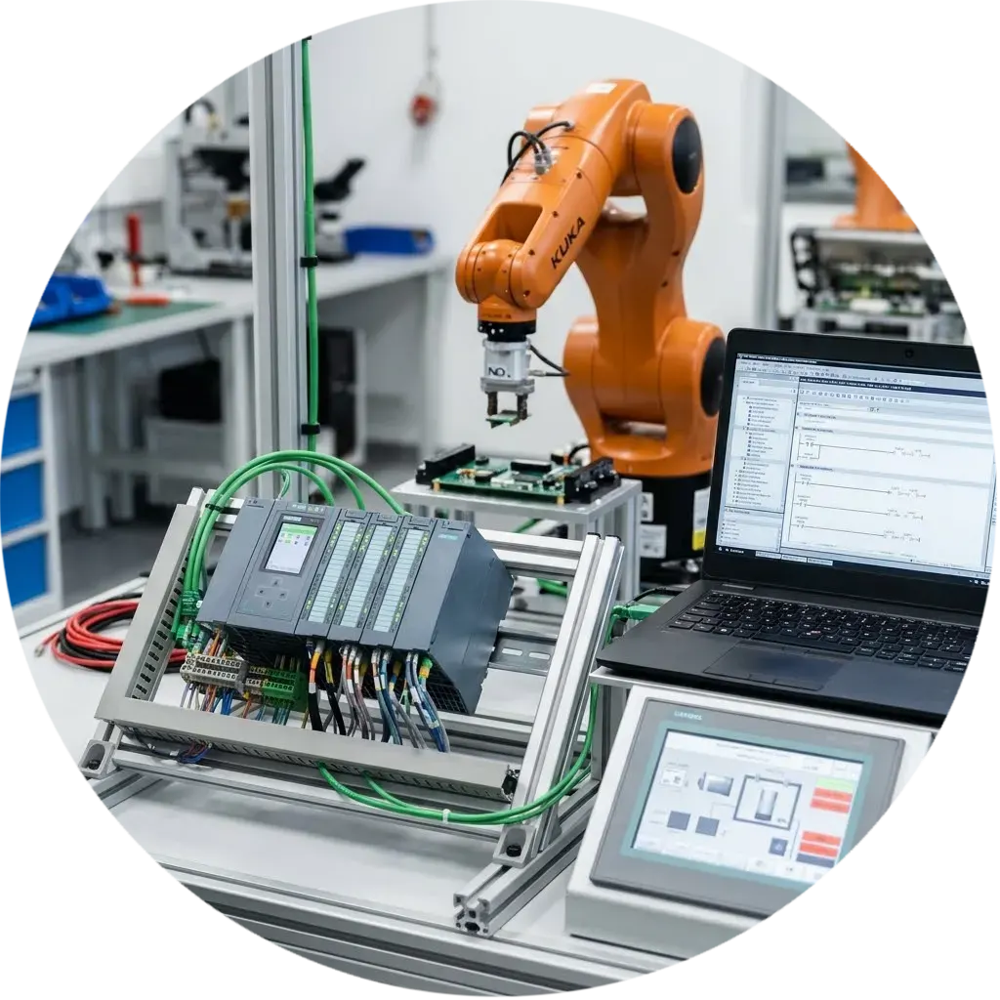
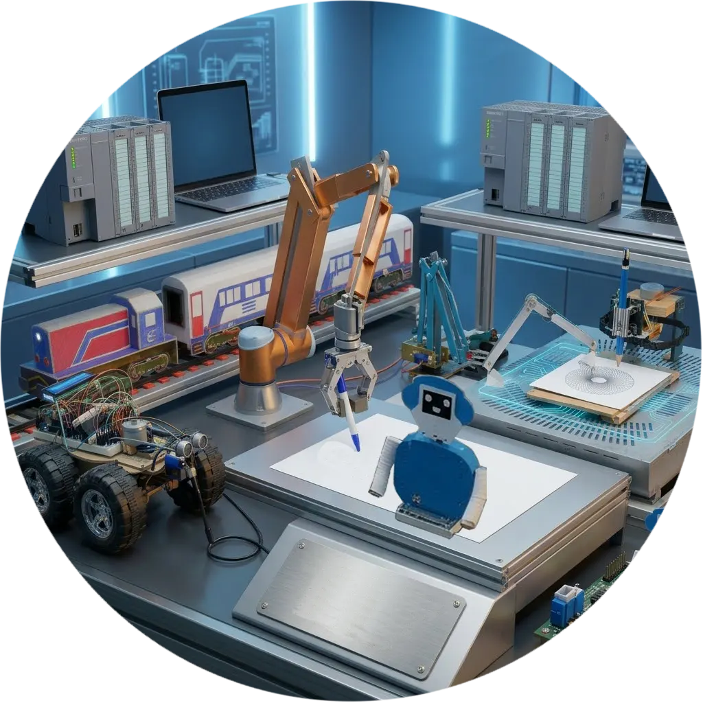

Ich bin staatlich geprüfter Techniker für Elektrotechnik mit dem Schwerpunkt Automatisierung und industrielle Informatik. Ich verfüge über fundierte Erfahrung im Bereich der Industrieautomatisierung und Industrie 4.0. Gleichzeitig baue und entwickle ich Roboter sowie CNC-Maschinen. Sie können sich all meine entwickelten Projekte ansehen, indem Sie auf die Schaltfläche "Meine Projekte" klicken. Dort finden Sie zu jedem Roboter ein Funktionsvideo sowie eine detaillierte, bildgestützte Erklärung des mechanischen und elektrischen Aufbaus.
Ich arbeitete zweieinhalb Jahre in einer Keramikfabrik, und das war eine meiner besten Erfahrungen, da ich zusätzlich zu meinem bisherigen Wissen viel dazulernte. Ich arbeitete als staatlich geprüfter Techniker für Elektrotechnik und reparierte große und komplexe Maschinen in Rekordzeit. Ich konnte unter starkem Druck arbeiten, da die Art der Arbeit erforderte, Reparaturen durchzuführen, während die Maschinen weiterliefen. Ein Stillstand der Maschine wie beispielsweise des Brennofens hätte ihre Beschädigung bedeutet. Diese Fabrik war mit hochmodernen Technologien ausgestattet, Sie umfasste eine riesige hydraulische Presse mit 3.800 Tonnen Presskraft sowie einen Brennofen von SACMI, autonome SACMI-Roboter, die mittels Radar navigierten und industrieroboter von System. Die Automatisierung basierte auf Speicherprogrammierbaren Steuerungen (SPS) von Siemens, Beckhoff und Schneider Electric. Zudem kamen Frequenzumrichter führender Hersteller wie Siemens, Rexroth, ABB und Schneider Electric zum Einsatz, neben pneumatischen Systemen.

• Ich entwickelte vier Modelle einer CNC-Zeichenmaschine.
• Ich baute und entwickelte Interaktive Roboter, einige davon sprechen und führen befehle aus, während andere spezifische Aufgaben erfüllen.
• Ich baute eine Reihe von robotergesteuerten Fahrzeugen, einige davon vermeiden Hindernisse, andere erkennen Metalle, und es gibt auch Roboter, die auf Verkehrsampeln reagieren und Feuer löschen können. Sie können ferngesteuert oder im autonomen Modus betrieben werden.
• Mein Einstieg in die Robotik begann früh, Ich baute einen vollautomatischen Roboter ganz ohne Mikrocontroller oder Programmierung sowie einen weiteren kabelgesteuerten Roboter.

• Ich habe einen nationalen Bachelorabschluss in Elektrotechnik, Fachrichtung Automatisierung und industrielle Datenverarbeitung.
• Ich habe das Abitur im Bereich Technikwissenschaften.